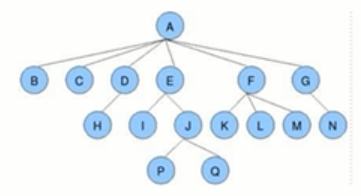

树的基本定义
树具有以下特点：
1、每个节点有零个或者多个子节点。
2、没有父节点的节点为根节点。
3、每一个非根节点只有一个父节点。
4、每个节点及其后代节点整体上可以看做是一棵树，称为当前节点的父节点的一颗子树。
树的相关术语

节点的度：
一个节点含有的子树的个数称为该节点的度。
例如：A的度为6，E的度为2
叶节点：
度为0的节点称为叶节点，也可以叫做终端节点。
例如：B、H、P
分支节点：
度不为0的节点称为分支节点，也可以叫做非终端节点。
例如： A、F、E
节点的层次：
从根节点开始，根节点的层次为1，根的直接后继层次为2，以此类推。
例如：A的层次为1，B、C、D层次为2，H层次为3，P和Q层次为4.
节点的层序编号：
将树中的节点，按照从上层到下层，同层从左到右的次序排成一个线性序列，把他们编成连续的自然数。
例如：A为1，B为2，C为3，D为4，G为7，H为8，N为14
树的度：
树中所有节点的度的最大值。
树的高度：
树中节点的最大层次。
森林：
m（m>=0）个互不相交的树的集合，将一颗非空的根节点删去，树就变成一个森林；给森林增加一个统一的根节点，森林就变成了一棵树。
孩子节点：
一个节点的直接后继节点称为该节点的孩子节点互称兄弟节点。
双亲节点：
一个节点的直接前驱称为该节点的双亲节点。
兄弟节点：
同一双亲节点的孩子节点间
二叉树
二叉树的基本定义
二叉树就是度不超过2的树（每个节点最多有两个子节点）
满二叉树：
如果一个二叉树的每一层的节点树都达到最大值，则这个二叉树就是满二叉树。
完全二叉树：
叶节点只能出现在最下层和次下层，并且最下面一层的节点都集中在该层最左边的若干位置的二叉树。
二叉查找树的创建
二叉树的节点类API设计
类名 | Node<Key,Value> |
构造方法 | Node(Key key,Value value,Node left,Node right) |
成员变量 | public Node left:记录左子节点 public Node right：记录右子节点 public Key key 存储键 public Value value:存储值 |
二叉查找树的API设计
| 类名 | BinaryTree<Key extends Comparable<Key>,Value value> |
构造方法 | BinaryTree() |
成员变量 | private Node root:记录根节点 private int N:记录树中元素的个数 |
成员方法 | public void put(Key key,Value value):向树中插入一个键值对 private Node put(Node x,Key key,Value val):给指定的树x上，添加一个键值对，并返回添加后的新树 public Value get(Key key):根据key，从树中找出对应的值 private Value get(Node x,Key key):从指定的树x中，找出key对应的值 public void delete(Key key):根据key，删除树中对应的键值对 private Node delete(Node x,Key key):删除指定树x上键为key的键值对，并返回删除后的新树。 public int size():获取树中元素的个数 |
二叉查找树的实现


public Value get(Key key){
get(key,root);
}
public Value get(Key key,Node x){
if(x==null){
return null;
}
if(key.comparto(x.key)>0){
return get(key,x.right);
}else if(key.comparto(x.key)<0){
return get(key,x.left);
}else{
return x.value;
}
}
public void delete(Key key){
delete(root,key);
}
public Node delete(Node x,Key key){
//x树为null
if(x==null){
return null;
}
//x树不为null
int cmp=key.compareTo(x.key);
if(cmp>0){
x.right=delete(x.right,key);
}else if(cmp<0){
x.left=delete(x.left,key);
}else{
//元素个数-1
N--;
//完成删除节点的动作，删除x
//找到右子树中最小的节点
if(x.right==null){
return x.left;
}
if(x.left==null){
return x.right;
}
Node minNode=x.right;
while(minNode.left!=null){
minNode=minNode.left;
}
//删除右子树中最小的节点
Node n=x.right;
while(n.left!=null){
if(n.left.left==null){
n.left=null;
}else{
n=n.left;
}
}
//让x节点的左子树成为minNode的左子树
minNode.left=x.left;
//让x节点的右子树成为minNode的右子树
midNode.right=x.right;
//让x节点的父节点指向minNode
x= midNode;
}
return x;
}
二叉查找树其他的便捷方法
查找二叉树中最小的键：
public Key min(){
return min(root).key;
}
public Key min(Node x){
if(x.left!=null){
return min(x.left);
}else{
return x;
}
}
查找二叉树中最大的键：
public Key max(){
return max(root).key;
}
public Key max(Node x){
if(x.right!=null){
return max(x.right);
}else{
return x;
}
}
二叉查找树的基础遍历：
1、前序遍历：
先访问根节点，然后再访问左子树，最后访问右子树。
2、中序遍历：
先访问左子树，再访问根节点，最后访问右子树。
3、后序遍历：
先访问左子树，再访问右子树，最后访问根节点。
前序遍历：
API
public Queue<Key> preErgodic():使用前序遍历，获取整个树中的所有键
public void preErgodic(Node x,Queue<Key>):使用前序遍历，把指定树x中的所有键放入到keys队列中
代码
public Queue<Key> preErgodic(){
Queue<key> keys=new Queue<>();
preErgodic(root,keys);
return keys;
}
public void preErgodic(Node x,Queue<Key> keys){
if(x==null){
return;
}
//把x节点的key放入keys中
keys.enqueque(x.key);
//递归遍历x节点的左子树
if(x.left!=null){
preErgodic(x.left,keys);
}
//递归遍历x节点的右子树
if(x.right!=null){
preErgodic(x.right,keys);
}
}
中序遍历：
API
public Queue<Key> midErgodic():使用中序遍历，获取整个树中的所有键
public void preErgodic(Node x,Queue<Key>):使用中序遍历，把指定树x中的所有键放入到keys队列中
代码
public Queue<Key> midErgodic(){
Queue<Key> keys =new Queue<>();
midErgodic(root,keys);
return keys;
}
public void midErgodic(Node x,Queue<Key> keys){
if(x.==null){
return;
}
//先递归，把左子树中的键放入keys中
if(x.left!=null){
mid(x.left,keys);
}
//把当前节点的键放入到keys
keys.enqueque(x);
//递归，把右子树中的键放入到keys中
if(x.right!=null){
mid(x.right,keys);
}
}
后序遍历
API
public Queue<Key> afterErgodic():使用中序遍历，获取整个树中的所有键
public void afterErgodic(Node x,Queue<Key>):使用中序遍历，把指定树x中的所有键放入到keys队列中
代码
public Queue<Key> afterErgodic(){
Queue<Key> keys=new Queue();
afterErgodic(root,keys);
return keys;
}
public void afterErgodic(Node x,Queue<Key>){
if(x==null){
return;
}
if(x.left!=null){
afterErgodic(x.left,keys);
}
if(x.right!=null){
afterErgodic(x.right,keys);
}
keys.enqueque(x.key);
}
二叉树的层序遍历：
所谓的层序遍历，就是从根节点(第一层)开始，依次向下，获取每一层所有节点的值。
API
public Queue<Key> layerErgodic():使用层序遍历，获取整个树中的所有键
实现步骤：
1、创建队列，存储每一层的节点；
2、使用循环队列从队列中弹出一个节点；
2、1、获取当前节点的key；
2、2、如果当前节点的左子节点不为空，则把左子节点放入队列中
2、3、如果当前节点的右子节点不为空，则把右子节点放入到队列中


代码：
public Queue<Key> layerErgodic(){
//定义两个队列，分别存储树中的键和树中的节点
Queue<Key> keys=new Queue<>();
Queue<Node> nodes=new Queue<>();
//在节点队列放入根节点
nodes.enqueue(root);
while(!nodes.isEmpty){
//从nodes队列中弹出一个节点，并将弹出节点的key放入keys队列
Node n=nodes.dequeque();
keys.enqueque(n.key);
if(n.left!=null){
nodes.enqueque(n.left);
}
if(n.right!=null){
nodes.enqueque(n.right);
}
}
return keys;
}
二叉树应用案例：
1、二叉树的最大深度问题：
需求：给定一棵树，计算树的最大深度（树的根节点到最远叶子节点的最长路径上的节点数）
API
public int maxDepth():计算整个树的最大深度
private int maxDepth(Node x):计算指定树x的最大深度
实现步骤：
1、如果根节点为空，则最大深度为0
2、计算左子树的最大深度
3、计算右子树的最大深度
4、当前树的最大深度=左子树的最大深度和右子树中最大深度中的较大者+1
代码：
public int maxDepth(){
maxDepth(root);
}
private int maxDepth(Node x){
if(x==null){
return 0;
}
int max=0;
int maxLeft=0;
int maxRight=0;
if(x.left!=null){
maxLeft=maxDepth(x.left);
}
if(x.right!=null){
maxRight=maxDepth(x.right);
}
max=maxLeft>maxRight?maxLeft+1:maxRight+1;
return max;
}
2、折纸问题：


public class PagerFoldingTest{
public static void main(String[] args){
//通过模拟对折N次纸，产生树
Node<String> tree=createTree(3);
printTree(tree);
}
public static Node<String> createTree(int N){
//定义根节点：
Node<String> root=null;
for(int 1=0;i<N;i++){
//1、当前是第一次对折
if(i==0){
root=new Node("down,null,null");
continue;
}
//2、当前不是第一次对折
//定义一个层序队列，通过层序遍历的思想，找到叶子节点，给叶子节点添加子节点
Queue<Node> queue=new Queue<>();
Queue.enqueuqe(root);
while(!queue.isEmpty()){
//从队列中弹出一个节点
Node<String> tmp=queue.dequeue();
//如果有左子节点，则把左子节点放入到队列中
if(tmp.left!=null){
queue.enqueue(tmp.left);
}
//如果有右子节点，则把右子节点放入到队列中
if(tmp.right!=null){
queue.enqueue(tmp.right);
}
//如果既没有左子节点也没有右子节点，则证明是叶子节点，给叶子节点添加左子节点，和右子节点
if(tmp.left==null&&tmp.right==null){
tmp.left=new Node<String>("down",null,null);
tmp.fight=new Node<String>("up",null,null);
}
}
}
return null;
}
//节点类
priavte static class Node<T>{
public T item;
public Node left;
public Node right;
public Node(T item,Node left,Node right){
this.item=item;
this.left=left;
this.right=right;
}
}
//打印树中每个节点到控制台
public static void printTree(Node root){
//需要使用中序遍历完成
if(root==null){
return;
}
//打印左子树的每个节点
if(root.left!=null){
printTree(root.left);
}
System.out.print(root.item);
//打印当前节点
//打印右子树的每个节点
if(root.right!=null){
printTree(root.right);
}
}
}
平衡树：
1.1 2-3查找树
为了保证查找树的平衡性，我们需要一些灵活性，因此在这里我们允许树中一个节点保存多个值。确切地说，我们将一颗标准二叉查找树中的节点称为2-节点（含有一个键和两条链），而现在我们饿引入3-节点，它含有两个键和三条链，2-节点和3-节点中的每条链都对应着其中保存的键所分割产生的一个区间。
1.1.1 2-3查找树的定义
一颗2-3查找树要么为空，要么满足一面两个要求。
2-节点：
含有一个键（及其对应的值）和两条链，左链接指向2-3树中的链都小于该节点，右链接指向的2-3树中的键都大于该节点。
3-节点
含有两个键（及其对应的值）和三条链，左链接指向2-3树中的键都小于该节点，中链接指向的2-3树中的键都位于该节点的两个键之间，右链接指向2-3树中的键都大于该节点。

1.1.2 查找
将二叉查找树的查找算法一般化我们就能够直接得到2-3查找树的查找算法。要判断一个键是否在树中，我们先将它和根节点中的键比较。如果它和其中任意一个相等，查找命中；否则我们就根据比较的结果找到相应区间的连接，并在其指向的子数中递归地继续查找，如果这个是空链接，查找未命中。


1.1.3 插入
1.1.3.1 向2-节点中插入新键
往2-3查找树中插入元素和往二叉查找树中插入元素一样，首先要进行查找，然后将节点挂到未找到的节点上。2-3查找树之所以能够保证在最差的情况下的效率的原因是在于其插入之后仍然能够保持平衡状态。如果查找未找到的节点是一个2-节点，那么很容易，我们只需要将新的元素放到这个2-节点里面使其变成一个3-节点即可。但是如果查找的节点结束与一个3-节点，那么可能有点麻烦。

1.1.3.2 向一颗只含有一个3-节点的树中插入新键
假设2-3树只包含一个3-节点，这个节点有两个键，没有空间来插入第三个键了，最自然的方式是我们假设这个节点能放三个元素，暂时使其变成一个4-节点，同时包含四条链接，然后，我们将这个4-节点的中间元素提升，左边的键作为其左子节点，右边的键作为其右子节点。插入完成，变为2-3查找树，树的高度从0变为1。

1.1.3.3 向一个父节点为2-节点的3-节点中插入新键
和情况2一样，我们也可以将新的元素插入到3-节点中，使其成为一个临时的4-节点，然后，将该节点的中间元素提升到父节点即2-节点中，使其父节点成为一个3-节点，然后将左右节点分别挂在这个3-节点的恰当位置。


1.1.3.4 向一个父节点为3-节点的3-节点中插入新键
当我们插入的节点是3-节点的时候，我们将该节点拆分，中间元素提升至父节点，但是此时父节点是一个3-节点，插入之后，父节点变成了4-节点，然后继续将中间元素提升至其父节点，直至遇到一个父节点是2-节点，然后将其变为3-节点，不需要继续进行拆分。


1.1.3.5 分解根节点
当插入节点到根节点的路径上全部是3-节点的时候，最终我们的根节点会变成一个临时的4-节点，此时，就需要将根节点拆分为两个2-节点，树的高度+1.


2-3查找树的性质：
通过对2-3查找树插入操作的分析，我们发现在插入的时候，2-3树需要做一些局部的变化来保持2-3树的平衡。
一颗完全平衡的2-3树具有一下的性质：
1、任意空链接到根节点的路径长度都是相等的。
2、4-节点变换未3-节点时，树的高度不会发生变化，只有当根节点是临时的4-节点，分解根节点时，树高+1。
3、2-3树与普通的二叉查找树最大的区别在于，普通的二叉查找树是自顶向下生长，而2-3查找树是自底向上生长。
2-3树的实现
直接实现2-3树比较复杂，因为：
1、需要处理不同的节点类型，非常繁琐；
2、需要多次比较操作来将节点下移；
3、需要拆分4-节点
4、拆分4-节点的情况有很多种。
2-3查找树实现起来比较复杂，在某些情况插入后的平衡操作可能会使得效率降低。但是2-3查找树作为一种比较重要的概念和思路对红黑树、B树和B+树非常重要。
1.2 红黑树
2-3树最坏情况下所有的子节点都是2-节点，树的高度为lgN，相比于二叉查找树（二叉查找树最坏情况下树的高度为N），确实保证了最坏情况下的时间复杂度，但是实现起来过于繁琐，红黑树是2-3树思想的简单实现。
红黑树主要是对2-3树进行编码，红黑树背后的基本思想是用标准的二叉查找树（完全由2-节点构成）和一些额外的信息（替换3-节点）来表示2-3树。将树中的链接分为两种类型：
红链接：将两个2-节点连接起来构成一个3-节点。
黑链接：是2-3树中的普通链接。
确切的说，我们将3-节点表示为右一条左斜的红色链接（两个2-节点其中之一是另个一个左子节点）相连的两个2-节点，这种表示法的一个优点是，我们无需修改就可以使用标准的二叉查找树的get()方法。

红黑树的定义：
红黑树是含有红黑链接并满足下列条件的二叉树：
1、红链接均为左链接；
2、没有任何一个节点同时和两条红链接相连；
3、该树是完美黑色平衡的，即任意空链接到根节点的路径上的黑链接数量相同。
下面是红黑树与2-3树的对应关系：


红黑树节点类API
因为每个节点都只会有一条指向自己的链接（从它的父节点指向它），我们可以在之前的Node节点中添加一个布尔类型的变量color来表示链接的颜色。如果指向它的链接是红色的，那么该变量的值为true，如果该链接是黑色的，那么该变量的值为false。

平衡化：
在对红黑树进行一些增删改查的操作后，很有可能会出现红色的右链接或者两条连续红色的链接，而这些都不满足红黑树的定义，所以我们需要对这些情况通过旋转进行修复，让红黑树保持平衡。
左旋：
当某个节点的左子节点为黑色，右子节点为红色，此时需要左旋。
前提：当前节点为h，它的右子节点为x；
左旋过程：
1、让x的左子节点变为h的右子节点：h.right=x.left;
2、让h成为x的左子节点：x.left=h;
3、让h的color属性变为x的color属性值：x.color=h.color;
4、让h的color属性变为RED：h.color=true;

右旋：
当某个节点的左子节点是红色，且左子节点的左子节点也是红色，需要右旋。
前提：当前节点为h，它的左子节点为x；
右旋过程：
1、让x的右子节点成为h的左子节点：h.left=x.right;
2、让h成为x的右子节点：x.right=h;
3、让h的color变为x的color属性值：x.color=h.color;
4、让h的color为RED;


插入操作：
1、向单个2-节点中插入新键


2、向底部的2-节点插入新键


3、颜色反转

4、向一颗双键树（即一个3-节点）中插入新键


5、根节点的颜色总是黑色的
color属性为父节点指向当前节点的连接的颜色，由于根节点不存在父节点，所以每次插入操作后，我们都需要把根节点的颜色设置为黑色。
6、向树底部的3-节点插入新键


红黑树的API设计

红黑树的实现：
public class RedBlackTree<Key extends Comparable<Key>,value>{
//根节点
private Node root;
//记录树中元素的个数
private int N;
//红色链接
private static final boolean RED=true;
//黑色链接
private static final boolean BLACK=false;
//节点类
private class Node{
//存储键
public Key key;
//存储值
private Value value;
//记录左子节点
public Node left;
//记录右子节点
public Node right;
//由其父节点指向它的链接的颜色
public boolean color;
public Node(Key key,Value value,Node left,Node right,boolean color){
this.key=key;
this.value=value;
this.left=left;
this.right=right;
this.color=color;
}
}
public int size(){
return N;
}
private boolean isRed(Node x){
if(x==null){
return false;
}
return x.color==RED;
}
private Node rotateLeft(Node h){
//获取h节点的右子节点，表示为x
Node x=h.right;
//让x节点的左子节点成为h节点的右子节点
h.right=x.left;
//让h成为x节点的左子节点
x.left=h;
//让x节点的color属性等于h节点的color属性
x.color=h.color;
//让h节点的color属性变为红色
h.color=RED;
return x;
}
private Node rotateRight(Node h){
//获取h节点的左子节点，表示为x
Node x=h.left;
//让x节点的右子节点成为h节点的左子节点
h.left=x.right;
//让h节点成为x节点的右子节点
x.right=h;
//让x节点的color属性等于h节点的color属性
x.color=h.color;
//让h节点的color属性为RED
h.color=RED;
return x;
}
private void flipColors(Node h){
//当前节点变为红色
h.color=RED;
//左子节点和右子节点变为黑色
h.left.color=BLACK;
h.right.color=BLACK;
}
//在整个树上完成插入操作
public void put(Key key,Value val){
root=put(root,key,val);
//根节点的颜色总是黑色的
root.color=RED;
}
//在指定树中，完成插入操作，并返回添加元素后新的树
public Node put(Node h,Key key,Value val){
//判断h是否为空，如果为空则直接返回一个红色的节点
if(h==null){
N++;
return new Node(key,val,null,null,RED);
}
//比较h节点的键和key的大小
int cmp=key.compareTo(h.key);
if(cmp<0){
//继续往左
h.left=put(h.left,key,val);
}
}else if(cmp>0){
//继续往右
h.right=put(h.right,key,val);
}else{
//发生值的替换
h.value=val;
}
//进行左旋：当当前节点h的左子节点为黑色，右子节点为红色，需要左旋
if(isRed(h.right)&&!isRed(h.left)){
h=rotateLeft(h);
}
//进行右旋：当前节点h的左子节点和左子节点的左子节点都为红色，需要右旋
if(isRed(h.left)&&isRed(h.left.left)){
h=rotateRight(h);
}
//颜色反转：当前节点的左子节点和右子节点都为红色时，需要进行颜色反转
if(isRed(h.left)&&isRed(h.right)){
flipColors(h);
}
return h;
}
//根据key，从树中找出对应的值
public Value get(Key key){
return get(root,key);
}
public Value get(Node x,Key key){
if(x==null){
return null;
}
//比较x节点的键和key的大小
int cmp=key.compareTo(x.key);
if(cmp<0){
return get(x.left,key);
}else if(cmp>0){
return get(x.right,key);
}else{
return x.value;
}
}
}
B-树
B树是一种树状数据结构，它能够存储数据，对其进行排序并允许以O(logn)的时间复杂度进行查找、顺序读取、插入和删除等操作。
B-树的特性：
B树中允许一个节点包含多个key，可以是3个、4个、5个甚至更多，并不确定，需要看具体的实现。选择一个参数M，来构造一个B树，可以把它称作是M阶的树，那么该树会具有如下的特点：
1、每个节点最多有M-1个key，并且以升序排列；
2、每个节点最多能有M个子节点；
3、根节点至少有两个子节点。

在实际应用中B树的阶数一般都比较大（通常大于100），所以，即使存储大量的数据，B树的高度任然比较小，在某些应用场合就可以体现出它的优势。
B-树中存储数据
若参数M选择为5，那么每个节点最多包含4个键值对，我们以5阶B树为例，看看B树的数据存储。


B树在磁盘文件中的应用
计算机操作磁盘上的文件是通过文件系统操作的。在文件系统中就使用到了B树这种数据结构。
磁盘：

磁盘IO


B+树
B+树是对B树的一种变形术，它与B树的差异在于：
1、非叶节点仅具有索引作用，也就是说，非叶子结点只存储key，不存储value；
2、树的所有叶节点构成一个有序链表，可以按照key排序的次序遍历全部数据。
B+树存储数据
若参数M选择为5，那么每个节点最多包含4个键值对，以5阶B+树为例，看看B+树的数据存储。


B+树和B树的对比：
B+树的优点在于：
1、由于B+树在非叶子节点上不包含真正的数据，只当做索引使用，因此在内存相同的情况下，能够存放更多的key。
2、B+树的叶子结点都是相连的，因此对整棵树的遍历只需要一次线性遍历叶子结点即可。而且由于数据顺序排列并且相连，所以便于区间查找和搜索。而B树则需要每一层的递归遍历。
B树的优点在于：
由于B树的每一个节点都包含key和value，因此根据key查找value时，只需要找到key所在的位置，就能够找到value，但B+树只有叶子结点存储数据，索引每一次查找，都必须一次一次，一直找到树的最大深度处，也就是叶子节点的深度，才能找到value。
B+树在数据库中的应用：
在数据库的操作中，查询操作可以说是一种最频繁的操作，因此在设计数据库时。必须要考虑到查询的效率问题，在很多数据库中，都采用了B+树来提高查询的效率。
在数据库的操作中，查询操作可以说是一种最频繁的操作，因此在设计数据库时。必须要考虑到查询的效率问题，在很多数据库中，都采用了B+树来提高查询的效率。
在操作数据库时，为了提高效率，可以基于某张表的某个字段建立索引，其实这个索引就是B+树这种数据结构实现的。

建立主键索引

未建立主键查询：区间查询需要查找每一条数据，并判断其是否在该区间。
建立主键查询之后，B+树所有叶子结点构成有序的链表，查找效率大大的提高。